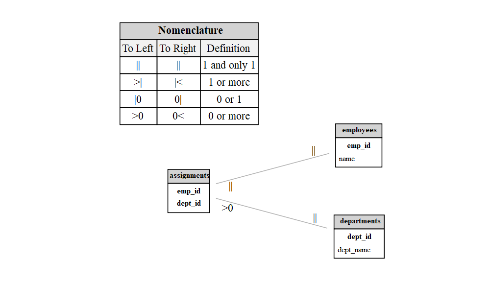
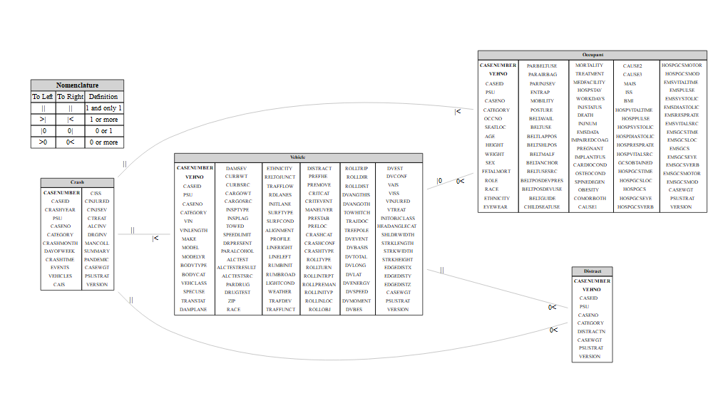

This R package creates Entity-Relationship Diagrams (ERDs). It generates traditional ERDs from data frames, enabling users to specify relationship cardinalities and variables involved in joins. The package also facilitates data joins based on the established ERD.
Objective
Create Entity Relationship Diagrams (ERD) by extracting the attribute names of tables to create complex graphs where:
- Nodes: Each entity (i.e., data frame) is represented as a node. The node label consists of the entity name and the attribute names within the entity.
- Edges: Relationships between entities are represented as edges between the corresponding nodes. Labels at the edges’ ends indicate the relationship’s type and cardinality.
Installation
You can install the development version of ERDbuilder like so:
remotes::install_github("gbasulto/ERDbuilder")Function and Object List
| Name | Class | Purpose |
|---|---|---|
render_erd() |
Function | Render ERD |
perform_join() |
Function | Perform left join of tables |
create_erd() |
Function | Create ERD object |
Functions and Objects in “ERDbuilder” package
Example 1
This is a basic example which shows you how to solve a common problem:
## Load packages _______________________________________________________________
library(ERDbuilder)
## Create datasets _____________________________________________________________
# Create dataframe "employees"
employees <- data.frame(
emp_id = c(1, 2, 3),
name = c("Alice", "Bob", "Charlie")
)
# Create dataframe "departments"
departments <- data.frame(
dept_id = c(1, 2),
dept_name = c("HR", "Engineering")
)
# Create dataframe "assignments"
assignments <- data.frame(
emp_id = c(1, 3),
dept_id = c(1, 2)
)
# Define relationships _________________________________________________________
relationships <- list(
assignments = list(
employees = list(emp_id = "emp_id", relationship = c("||", "||")),
departments = list(dept_id = "dept_id", relationship = c(">0", "||"))
)
)
# Create ERD object ____________________________________________________________
erd_object <- create_erd(
list(
employees = employees,
departments = departments,
assignments = assignments),
relationships)
# Render the ERD graphically ___________________________________________________
edr_plot2 <- render_erd(erd_object, label_distance = 0, label_angle = -25)
# Plot ERD _____________________________________________________________________
edr_plot2
#> Google Chrome was not found. Try setting the `CHROMOTE_CHROME` environment variable to the executable of a Chromium-based browser, such as Google Chrome, Chromium or Brave.
# ## Un-comment to export to TIFF ______________________________________________
# DPI = 600
# WidthCM = 38
# HeightCM = 38
#
# edr_plot2 |>
# export_svg() |>
# charToRaw |>
# rsvg(width = WidthCM * (DPI / 2.54),
# height = HeightCM *(DPI / 2.54)) |>
# tiff::writeTIFF("edr_plot2.tiff")Example 2
This is a second example with more entities and each entity having multiple attributes.
## Load packages ______________________________________________________________
library(ERDbuilder)
library(dplyr)
library(readr)
## Set URLs ____________________________________________________________________
data_url <- "https://raw.githubusercontent.com/jwood-iastate/DataFiles/main/"
occ_url <- paste0(data_url, "OCC.csv")
crash_url <- paste0(data_url, "CRASH.csv")
distract_url <- paste0(data_url, "DISTRACT.csv")
vehicle_url <- paste0(data_url, "GV.csv")
## Load data ___________________________________________________________________
occupant_tbl <- read_csv(occ_url, show_col_types = FALSE) # Occupant Data
crash_tbl <- read_csv(crash_url, show_col_types = FALSE) # Crash data
distract_tbl <- read_csv(distract_url, show_col_types = FALSE)# Distraction data
vehicle_tbl <- read_csv(vehicle_url, show_col_types = FALSE) # Vehicle data
## Define relationships ________________________________________________________
relationships <- list(
Crash = list(
Vehicle = list(
CASENUMBER = "CASENUMBER", relationship = c("||", "|<")),
Occupant = list(
CASENUMBER = "CASENUMBER", relationship = c("||", "|<")),
Distract = list(
CASENUMBER = "CASENUMBER", relationship = c("||", "0<"))
),
Vehicle = list(
# Crash = list(
# CASENUMBER = "CASENUMBER", relationship = c("|<", "||")),
Occupant = list(
CASENUMBER = "CASENUMBER", VEHNO = "VEHNO", relationship = c("|0", "0<")),
Distract = list(
CASENUMBER = "CASENUMBER", VEHNO = "VEHNO", relationship = c("||", "0<"))
)
)
## Create the ERD object _______________________________________________________
erd_object <-
create_erd(
list(
Crash = crash_tbl,
Vehicle = vehicle_tbl,
Occupant = occupant_tbl,
Distract= distract_tbl),
relationships)
# Perform joins ________________________________________________________________
# Note that there will be a many-to-many relationship when joining the Distract
# table since the Crash, Vehicle, and Occupant tables will have already been
# joined.
joined_data <-
perform_join(erd_object, c("Crash", "Vehicle", "Occupant", "Distract"))
#> Performing join: Using inner_join for table Vehicle
#> Performing join: Using inner_join for table Occupant
#> Performing join: Using inner_join for table Distract
## Render plot _________________________________________________________________
edr_plot <-
render_erd(erd_object, label_distance = 0, label_angle = 15, n = 20)
edr_plot
## Uncomment to export to SVG __________________________________________________
# # Render the ERD graphically, save as a .tiff, then include in rendered files
# library(rsvg)
# library(DiagrammeRsvg)
#
#
# DPI <- 600
# WidthCM <- 38
# HeightCM <- 38
#
# edr_plot |>
# export_svg() |>
# charToRaw() |>
# rsvg(
# width = WidthCM * (DPI / 2.54),
# height = HeightCM * (DPI / 2.54)) |>
# tiff::writeTIFF("edr_plot.tiff")